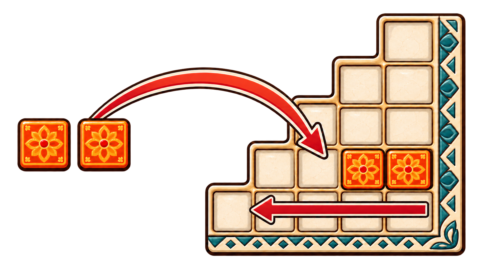
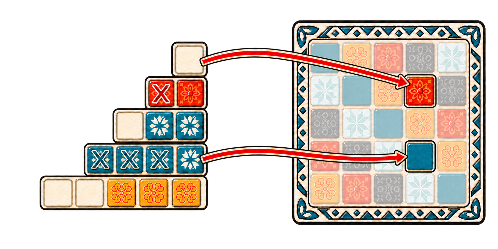
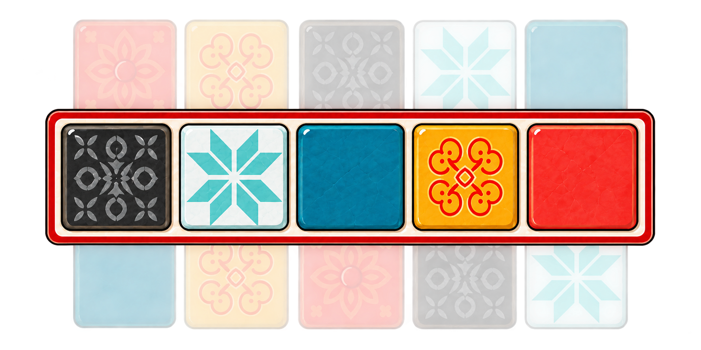

/pic6973671.png)
Objetivo de la partida
Preparación
Entregá los tableros
Colocá el marcador de puntuación en el 0
Colocá las fábricas
Formá un círculo:
2 jugadores: 5 expositores
3 jugadores: 7 expositores
4 jugadores: 9 expositores
Poné los azulejos en la bolsa
Llená las fábricas
El jugador inicial coloca 4 azulejos al azar en cada fábrica.
Las tres fases de una ronda
Oferta de fábrica
Alicatado de la pared
Siguiente ronda
Oferta de fábricaCómo seleccionar y colocar azulejos.
Tomá un color
Elegí una fábrica y tomá todos los azulejos de un mismo color. Empujá todos los demás al centro de la mesa.
Tomá todos los azulejos de un mismo color. La primera persona que elija del centro también toma el marcador inicial y lo pone en el primer espacio libre de su línea del suelo.
- Colocá toda la selección en una sola línea, de derecha a izquierda. No podés dividirla entre varias líneas.
- Las líneas solo pueden contener un color.
- No podés usar una línea si la fila correspondiente de la pared ya contiene un azulejo de ese color.
- Todo exceso va a la línea del suelo, de izquierda a derecha.
- Está permitido colocar toda la selección directamente en la línea del suelo, aunque exista una línea de patrón válida.
- Si no quedan espacios, guardá los azulejos sobrantes en la tapa de la caja. No ocupan casillas adicionales ni generan más penalización.

Alicatado de la paredResolución de líneas completas y penalización del suelo.
- Revisá las líneas de patrón de arriba hacia abajo.
- Por cada línea completa, mové el azulejo situado más a la derecha al espacio de su color en la fila correspondiente de la pared.
- Puntuá el azulejo recién colocado inmediatamente.
- Descartá a la tapa de la caja los demás azulejos de esa línea.
- Dejá intactas las líneas incompletas: sus azulejos permanecen para la ronda siguiente.

Al terminar: perdé los puntos impresos sobre los espacios ocupados de la línea del suelo. Nunca podés bajar de 0 puntos.
Después de aplicar la penalización, descartá a la tapa todos los azulejos del suelo. Conservá frente a vos el marcador inicial: serás quien comience la próxima ronda.
Puntuación al colocar un azulejoContá las conexiones horizontales y verticales.
1 punto
Si no tiene ningún azulejo adyacente en horizontal ni vertical, ganá 1 punto.
Contá la línea conectada
Si solo forma un grupo horizontal o vertical, ganá 1 punto por cada azulejo conectado de esa línea, incluido el recién colocado.
Sumá ambas líneas
Si conecta tanto en horizontal como en vertical, puntuá la línea horizontal completa y luego la vertical completa. El nuevo azulejo cuenta en las dos.
Solo adyacencia ortogonal: las diagonales no conectan azulejos ni dan puntos.
Preparar la siguiente rondaRellenado de fábricas y reposición de la bolsa.
Si nadie completó una fila horizontal de cinco azulejos, la persona con el marcador inicial llena otra vez cada fábrica con cuatro azulejos de la bolsa.
- Si la bolsa se vacía, meté en ella todos los azulejos acumulados en la tapa y seguí llenando.
- Si tampoco alcanzan los descartes, comenzá la ronda aunque algunas fábricas no tengan cuatro azulejos.
- Colocá el marcador inicial nuevamente en el centro de la mesa.
Final del juegoBonificaciones, victoria y desempate.
La partida termina después de la fase de Alicatado de la Pared en la que alguien completa al menos una fila horizontal de cinco azulejos.

+2 puntos
Por cada fila horizontal completa de cinco azulejos.
+7 puntos
Por cada columna vertical completa de cinco azulejos.
+10 puntos
Por cada color del que hayas colocado sus cinco azulejos en la pared.
Victoria: gana quien tenga más puntos. En caso de empate, gana quien tenga más filas horizontales completas; si persiste, comparten la victoria.
Variante del muro grisUna pared libre con una restricción adicional.
Usá el lado gris de los tableros. Todas las reglas son iguales, excepto que al trasladar un azulejo desde una línea de patrón podés colocarlo en cualquier espacio de la fila correspondiente.
Restricción: un mismo color no puede aparecer más de una vez en ninguna fila ni en ninguna columna de la pared.